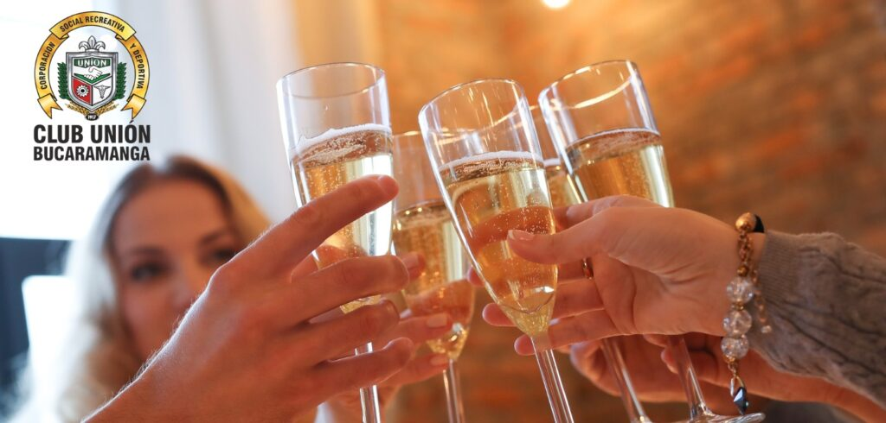
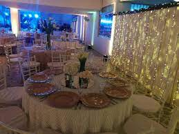
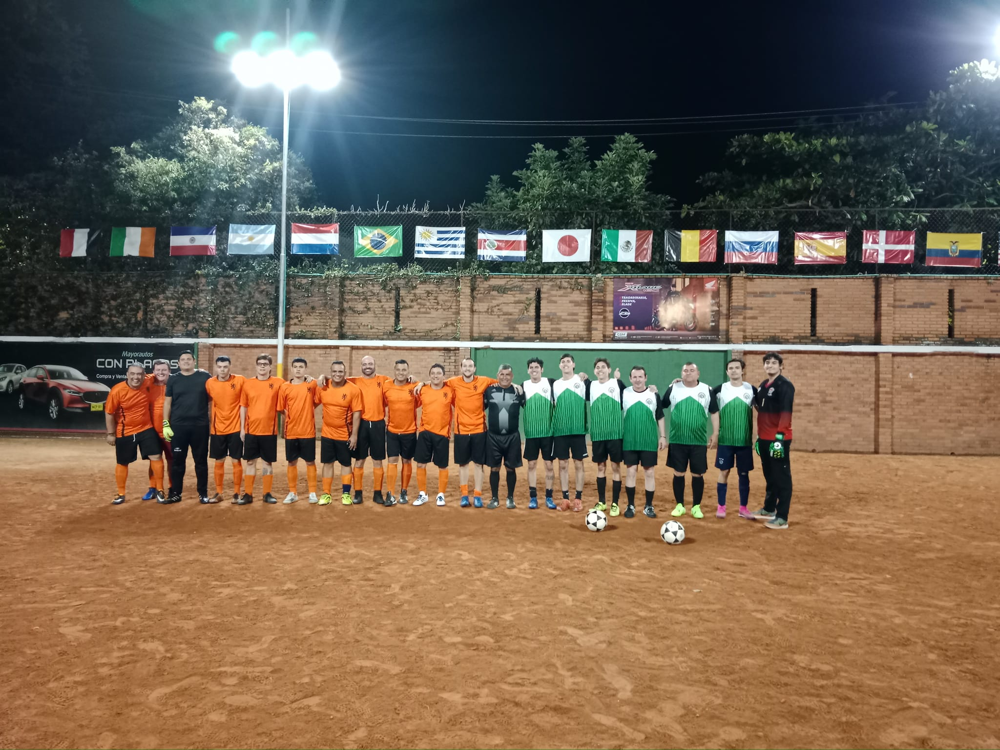

Club Unión
Historia
Fundado el 14 de enero de 1917, como “Club de Gremios Unidos”, cuya sede funcionó en la carrera 17 entre calles 33
y 34, en una casona amplia con tejas de barro y un patio grande en donde se hacían las fiestas, además tenía múltiples
habitaciones adaptadas en donde funcionaban billares, juegos de cartas (Tute, Poker y toruro).


